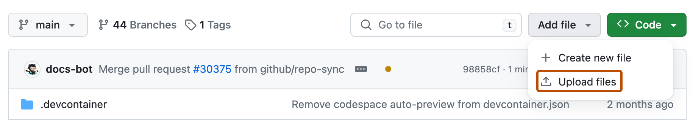

LAB 5 / FROM YOUR FOLDER TO A PLAYABLE LINK
Let someone open your project.
First make the web files. Then choose one host: itch.io or GitHub Pages. Finish by testing the link on another device.
1. Keep the editable project. Export the playable version.
- In Construct, save a .c3p copy through Menu > Project > Save as > Download a copy. This is the file you can reopen and edit.
- Choose Menu > Project > Export. Select Web (HTML5), then follow the export dialogs.
- Download the exported ZIP. Keep it separate from your .c3p. The ZIP contains index.html and the folders the browser needs.
- For itch.io, keep the web ZIP. For GitHub, extract it first: on Windows right-click > Extract All; on Mac double-click the ZIP.
Check: index.html must be at the top of the upload, alongside its assets and script folders. Keep the export's folder structure intact.
For a VS Code website, use your existing index.html, CSS, JavaScript and assets instead of exporting from Construct. Zip those files for itch.io, or upload them directly to GitHub.
Official Construct export and hosting instructions. Test the hosted page, rather than opening exported index.html from disk.
2. Choose where it will live.
itch.io: a playable project page
GitHub Pages: a hosted website
You only need one route. Both accept the web files from Construct. A .c3p on its own is not playable in a browser.
Route A: itch.io
Create your account
- Open itch.io registration. Choose a username, enter your email and create a password.
- Complete the registration steps and any requested email verification. Keep your login details private.
- Sign in and open your Dashboard. Choose Create new project.
Upload the playable files
- Give the project a title. In Kind of project, choose HTML.
- In Uploads, upload your exported web ZIP. Wait for it to finish.
- Enable “This file will be played in the browser” for that upload.
- Set the embed size to suit your game. Enable fullscreen if useful. Describe what the visitor should do.
- Save the page as a draft first and open its preview. Run the game and test the controls.
- When it works, return to the edit page and choose the visibility that lets your intended readers access it. For an ordinary public link, choose Public and save.
- Copy your project-page URL from the browser address bar. Open it while signed out, or ask your partner to open it.
Check: the page should show a playable game, rather than only a ZIP download. If it only downloads, check HTML and the browser-play checkbox.
Blank screen or missing files?
Open the ZIP and check that index.html is at its root. Keep all exported folders and filename spellings. Upload a fresh web export if files are missing. For updates, replace the old browser-play upload with the new ZIP and test again.
Route B: GitHub Pages
Create your account and repository
- Open GitHub signup. Follow the prompts for your email, password and username. Complete verification and verify your email.
- Sign in. Use the + menu and choose New repository.
- Name it, for example
my-project. Choose Public for the free Pages route. Add a README and choose Create repository.

Upload your files
- Extract the Construct web ZIP. Open the extracted folder containing index.html.
- On your repository's Code page, choose Add file > Upload files.
- Drag the contents of that folder into the upload area, including its subfolders. Do not upload the ZIP or an extra outer folder.
- Enter a short commit message, such as “Upload my web project”. Choose Commit changes.
- Check the repository file list: index.html should be alongside the export folders. A commit saves a version on GitHub; it is not yet the playable website.

The browser upload route uploads directly to GitHub. You do not need terminal commands or git push for this route. If an upload exceeds GitHub's limits, use itch.io for the web ZIP or ask Ingrid about a Git client.
Turn on Pages
- Open the repository's Settings, then Pages.
- Under Build and deployment, set Source to Deploy from a branch.
- Select main and /(root), then Save.
- Wait for deployment. Return to Pages and open the site link shown there. You can also check the Pages workflow under Actions.
- A project repository normally uses
https://YOUR-USERNAME.github.io/my-project/. Use the actual link GitHub gives you, not this placeholder.

I see a 404 or missing images.
Wait until the deployment succeeds. Check main and /(root), and that index.html is in that folder. File paths are case-sensitive: Image.png and image.png are different. Use relative asset paths so they work under your repository name.
3. Show a real moment from your project.
- Open the playable project and reach the scene you want to show.
- On Windows press Win+Shift+S and select the game area. Save the capture as PNG. On Mac press Shift+Cmd+4 and select the area; the image is saved to your desktop by default.
- On itch.io, open Edit game and use its screenshot upload area to add the image. Save the page and check how it appears.
- For GitHub Pages, upload the PNG into your website's assets folder. To display it on an HTML page, add an image element with the matching path and a useful description, then commit the change.
<img src="assets/my-scene.png" alt="A visitor discovers a hidden message on my campus map">A screenshot shows the project; the playable link lets people use it. Share the link alongside the image. Crop out private chats and account details.
4. Test the link someone else will use.
- Open the public URL on another device or while signed out.
- Check that the first scene loads, images appear and the main interaction works.
- Let a partner try the route without your instructions. Fix one confusing or broken part.
- Export and upload the updated version. Wait for deployment if using GitHub Pages, then test the same URL again.
Finished: you have your editable project, a hosted playable version and a link another person can open.
Return to Lab 5